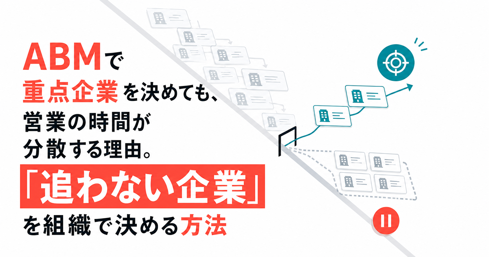

ABMで重点企業を決めても、営業の時間が分散する理由。「追わない企業」を組織で決める方法
みなさんこんにちは、Valorize AI代表の鈴木創也です。
ABMでは、営業部門とマーケティング部門の限られた時間を、重点企業へ集中させます。 その対象を選ぶために、自社に合う企業の条件を整理し、重点企業の一覧を作ります。
では、一覧が完成すれば、営業は選んだ企業に集中できるのでしょうか。
ところが、紹介された企業、以前から追っている見込み顧客、反応のあった問い合わせにも、それぞれ対応する理由があります。 どれも可能性があるとして残せば、営業担当者の予定は埋まり、重点企業の調査や提案準備は後回しになります。
企業を絞ったはずなのに、なぜ営業の時間は空かないのでしょうか。
一覧に入れる企業を決めても、個社別の営業活動を行わない企業、重点企業に使う時間の上限、例外を受け入れる条件を決めていないからです。 ABMを実行するには、どの企業を追うかと同時に、限られた時間をどの企業には使わないかを組織で決め、予定へ反映する必要があります。
企業を選ぶだけでは、重点企業に使う時間は生まれない
SalesforceのABM解説は、ABMを企業ごとに適した働きかけを行うBtoBマーケティングの手法として説明しています。 AdobeのABM解説も、ターゲット企業を定め、営業部門とマーケティング部門の時間や人員を集中させて、企業ごとの活動を組み立てる考え方を示しています。
この前提に立つと、重点企業の一覧は出発点にすぎません。 企業ごとの調査、社内相談、提案準備、顧客との会話には時間がかかります。 重点企業を増やしながら、従来の見込み顧客にも同じ深さで対応すれば、一社あたりに使える時間は減ります。
ここでいう「追わない」は、将来も取引しないという宣言ではありません。 現時点では、詳しい企業調査、個別の提案準備、継続的な連絡に時間を使わないという判断です。 企業の状況や自社の方針が変われば、改めて判定します。
理想顧客像を決めることと、「追わない企業」を決めることは対立しません。 前者は自社が価値を提供しやすい企業の条件を示し、後者はその条件と現在の営業体制を照らして、今の時間配分を決めます。
すべての可能性を残すと、何を失うのか
対応対象となる企業を広く残せば、機会損失を避けられるように見えます。 しかし、営業に使える時間は増えません。 どの企業も断らない判断には、別の代償があります。
重点企業への準備が浅くなる
すべての企業へ対応しようとすると、事業の変化、関係者、想定する課題を調べる時間が細切れになります。 その結果、提案内容は一般的になり、なぜ今その企業へ連絡するのかを示しにくくなります。
ABMでは、企業名を選ぶだけでなく、その企業に合わせて活動を組み立てます。 準備時間を確保できなければ、一覧だけが変わり、営業の進め方は従来のままです。
優先した理由と結果を比べられない
営業担当者ごとに異なる企業を選ぶこと自体が、直ちに問題になるわけではありません。 優先した理由、判断に使った事実、その後に商談が進んだ理由や止まった理由を、比較できる形で残していないことが問題です。
記録がなければ、ある企業を選んだ判断が妥当だったのか、たまたま結果が出たのかを区別できません。 企業の選び方は個人の経験に残り、次の担当者は同じ検討を最初から繰り返します。
短期の反応が、中長期の活動を押し出す
問い合わせや紹介への対応には期限があります。 一方、中長期で関係を築く企業への調査や連絡は、今日行わなくても直ちに問題が表れにくい仕事です。
両方を同じ優先枠へ入れると、期限の近い仕事が先に選ばれます。 中長期の重点企業は一覧に残っていても、予定していた準備が何度も延期されます。
「可能性がゼロではない企業」と「今、個社別の営業活動を行う企業」は別です。 前者を候補として残すことはできますが、後者への対応には時間の上限を置かなければなりません。
追わない企業を決める三つの判断軸
では、何を根拠に営業チームの時間を配分するのでしょうか。 業種や従業員数だけで区切れば簡単ですが、その条件だけでは、自社が価値を提供できるか、今対応する理由があるかを判断できません。
AdobeのABM戦略設計に関する資料では、ツールの導入より先に、事業目標と重点顧客について営業部門と合意する必要性が示されています。 その考え方を自社の判断に当てはめるときは、次の三つを分けて確認します。
自社が価値を提供できる条件
最初に、自社が解決できる課題、導入や運用に必要な体制、継続して価値を提供できる条件を確認します。 業種や企業規模は手掛かりになりますが、それだけで適合を決めません。
過去の受注企業だけから条件を作ると、契約に至った企業の特徴だけに偏ります。 失注企業と継続顧客も振り返り、契約後に価値を提供できた企業と、導入や運用で行き詰まった企業の違いまで確認します。
今、時間を使う理由
自社の支援条件に合う企業が、すべて今期の重点企業になるわけではありません。 事業や組織の変化、これまでの会話、検討の兆し、自社の中長期戦略との関係から、今、詳しく調べる理由を確かめます。
短期で商談化を目指す企業と、中長期で関係を築く企業は、同じ枠で比べません。 それぞれの枠の中で、優先理由を裏付ける事実がどこまで確認できているか、準備にどれだけの時間が必要か、誰が担当できるかを比べます。 枠の上限を超える場合は、営業責任者が優先する企業を選びます。 判断に必要な事実が不足する企業は調査へ、優先する理由があっても今は時間を割けない企業は保留へ移します。
後から検証できる記録
企業を区分した理由、判断に使った事実、次に見直す日、企業を別の区分へ移す条件を残します。 「対象外」という区分も固定せず、現時点で個社別の営業活動を行わない理由を説明できるようにします。
後から結果と照らせば、個別企業に対する判断の誤りと、判断基準そのものの問題を分けられます。 記録がなければ、売れた企業だけを見て基準を正しかったことにする危険が残ります。
四つの区分を、次の行動まで決める
三つの軸を確認しても、企業の一覧に評価を記すだけでは予定表は変わりません。 区分ごとに、誰が何を行い、いつ次の判断をするかを決めます。
- 優先
自社が価値を提供できる条件に合い、短期で商談化を目指す理由、または中長期で関係を築く理由が明確な企業です。
担当者を決め、必要な調査を行い、連絡や提案の計画を立てます。
- 調査
自社の支援条件に合う可能性はあるものの、判断に必要な情報が不足している企業です。
調べる項目、担当者、期限を決め、期限後に優先、保留、対象外のいずれかへ移します。
- 保留
自社の支援条件に合う可能性は確認できても、今期に詳しい調査や個別提案を行う理由が弱い企業です。
組織変更、資金調達、問い合わせなど、再判定する条件と見直し日を残し、それまでは継続的な個社対応を止めます。
- 対象外
現時点では自社の支援条件と合わず、個社別の営業活動に時間を使わない企業です。
判断理由と再判定する条件を残し、条件が変わるまで個別対応を行いません。
「調査」へ入れたまま、判断を先送りしてはいけません。 調査の期限と確認項目を決めなければ、情報が足りない企業を調べ続ける全件対応へ戻ります。 「保留」も、忘れるための区分ではなく、再判定する条件がそろうまで時間を使わない判断です。
通常の選定では、営業担当者とマーケティング担当者が判断に必要な事実をそろえ、営業責任者が企業の区分と担当者の割り当てを承認します。 中長期の戦略企業を新たに優先へ入れるなど、事業計画へ影響する変更は事業責任者も確認します。 担当者は情報を集めますが、営業の時間をどの企業に使うかという責任まで一人で負いません。
対応できる企業数を先に決める
四つの区分を作っても、優先企業を無制限に増やせば集中は崩れます。 そこで、対応可能な企業数を、目標ではなく時間から逆算します。
- 先に必要な仕事の時間を確保する
対象期間にチームが使える時間を出し、既存顧客への対応や社内で必要な業務など、重点企業への活動以外に必要な時間を差し引きます。
- 枠ごとに一社あたりの時間を見積もる
短期重点、中長期重点、調査、例外では、必要な作業が異なります。
各枠について、企業調査、社内相談、顧客との会話、その後の対応に必要な時間を、過去の類似した活動から見積もります。
- 残った時間で暫定上限を置く
残った時間を短期重点、中長期重点、調査、例外の各枠へ配分します。
各枠の時間を一社あたりの見積もり時間で割り、同時に対応できる企業数の暫定上限を決めます。
実際に使った時間を確認し、見積もりとの差が大きければ上限を改めます。
普遍的な企業数や配分比率はありません。 営業人数、商談期間、調査の範囲、顧客ごとの対応量が違うためです。
区分と時間の枠は、次のように対応させます。
- 短期重点枠：今期の商談化や進行中の案件を前へ進める優先企業に使います。
- 中長期重点枠：直近の商談化だけでは判断しない戦略的な優先企業に使います。
- 調査枠：情報が不足している調査企業に使い、期限後に四区分のいずれかへ移します。
- 例外枠：通常の選定手順を経ず、期限を限って対応する企業に使います。
保留と対象外には、継続的な個社対応の時間を割り当てません。 この対応を決めて初めて、企業の区分が実際の予定へ反映されます。
例外を認めるなら、代わりに何を止めるかも決める
それでも、既存顧客からの紹介や、具体的な検討期限がある問い合わせを一律に断ることは現実的ではありません。 問題は、例外があることではなく、例外対応によって延期される重点活動が見えなくなることです。
担当者は、例外として対応する理由、必要な時間、期限、影響を受ける重点活動を記録して申請します。 営業責任者は、例外枠に残っている時間と重点企業への影響を確認して承認します。 営業部門とマーケティング部門の定例会議では、期限まで対応を続けるかを確認します。
期限を迎えた企業は、優先、調査、保留、対象外のいずれかへ移します。 延長する場合は、新しい理由と必要な時間について改めて承認を得ます。
例外枠を超えた場合は、原則として新たな企業を受け入れず、次の見直し時点まで保留にします。 それでも直ちに対応するなら、責任者は追加で確保する人員や時間、または延期する重点活動を明示して承認します。
営業の予定は、使える時間の範囲で組まなければなりません。 例外だけを増やし、重点活動への影響をゼロとして扱うことはできません。
判断記録は、選定基準を検証するために使う
追わない企業を決めると、将来性のある企業を見落とすのではないかという不安が残ります。 その不安には、除外を避けることではなく、判断を定期的に検証することで対応します。
月次や四半期の会議で、別の区分へ移した企業と、引き続き優先している企業の状況を確認します。 企業の判断については、受注の有無だけでなく、当初の課題に関する仮説が妥当だったか、商談化しなかった理由は何かを見ます。 運用については、調査を期限内に終えたか、重点企業に予定した準備時間を確保できたか、例外対応によって延期した活動はなかったかを見ます。
結果に応じて、見直す対象を分けます。
- 適合すると判断した企業で、自社の支援範囲とのずれを示す失注理由が続くなら、適合の判断軸を見直します。
- 調査が長期化するなら、調査から別の区分へ移す条件を改めます。
- 予定した準備時間を確保できないなら、各枠の上限を下げるか、必要な人員を見直します。
- 例外対応で重点活動が止まるなら、例外の承認条件と上限を改めます。
判断基準の変更は営業責任者が決裁し、営業部門とマーケティング部門の会議で適用日と対象企業を共有します。 一社の失注だけを見て基準を変えず、条件の近い企業で同じ傾向が続いているかを確かめます。
判断理由を記録し、再判定の条件と日付を決めれば、「追わない」は永久除外を意味しません。 現時点の時間配分として、企業を追わない判断を下せます。
絞った企業に合わせて、営業活動を組み立てる
企業数を減らして予定表に空きができても、それだけではABMを実行できたことにはなりません。 空けた時間を、重点企業の理解と次の会話の準備に使う必要があります。
SalesforceのABM支援ページは、価値の高い特定の取引先に焦点を当て、営業部門とマーケティング部門が意思決定者に合わせて情報や体験を整える考え方を紹介しています。 自社で実行するときは、少なくとも次の三点を共有します。
- 優先する理由
自社の支援条件に合う理由、短期または中長期のどちらの枠で扱うか、今優先する理由を残します。
- 確認した事実と仮説
事業や組織の変化など、確認できた事実と、まだ確かめていない課題の見立てを分けます。
- 次に確かめることと担当者
次の会話で確認すること、担当する人、期限を決めます。
マーケティング担当者は施策への反応や企業の変化を共有し、営業担当者は会話で確かめた課題や関係者の状況を記録します。 両部門がこれらの情報を使って仮説を更新すれば、企業に対する前提の食い違いを確認しやすくなります。
人が優先順位を決め、AIで準備する
重点企業を絞るほど、一社ごとの調査と提案準備は重くなります。 ここで再びすべての企業に浅く対応すれば、冒頭と同じ状態へ戻ります。
ターゲットの設計、企業の区分と時間枠の決定、優先順位の変更、例外の承認、顧客との対話は人が担います。 人が決めたセグメントに合う企業リストの作成、企業情報の調査、提案内容や連絡文面の下書きにはAIを使えます。
AIがまとめた情報や作成した文面は、企業を優先する理由と想定課題に照らして担当者が確かめます。 顧客へ送るメールや提案内容は人が確認し、重要顧客ほど事実関係、提案の妥当性、相手への配慮を丁寧に見ます。
重点企業に使う時間を、日々の予定へ反映する
企業を絞ったのに営業の時間が空かなかったのは、追わない企業、重点企業に使う時間の上限、例外が生じたときの調整方法を決めていなかったからです。 優先、調査、保留、対象外の四区分を次の行動と結び付け、短期重点、中長期重点、調査、例外の枠に使える時間を割り当てます。 例外を増やすなら、追加する人員か延期する重点活動も決めます。
重点企業に予定した準備時間を本当に確保できたかも確かめます。 時間を配分し、確保できたかを確認するところまで運用すれば、ABMの優先順位が営業担当者の予定へ反映されます。
Valorize AIが提供するSales Triggerは、人が決めたセグメントを起点に、企業リストの作成、個社情報の調査、企業ごとの提案内容や連絡文面の準備を行う半自動化AIエージェントです。 送信前に人が内容を確認し、営業担当者が重点企業の理解、提案内容の判断、顧客との対話に集中できるようにします。